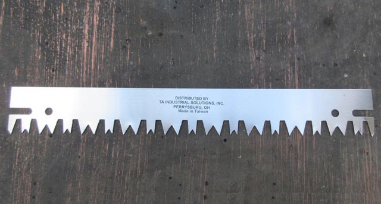
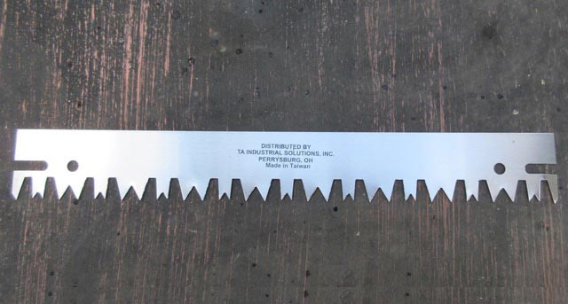

#152 Bricksaw Blade
The #152 Bricksaw Blade is designed to cut and trim insulating bricks used in industrial furnace installation and repair.
It was invented by founding partner B. David Cronan and originally made from scrap metal produced from making large bucksaws for the lumber industry by Henry Disston & Sons saws.
Dimensions: 15" x 2" x 0.045"
C1125 Compass Saw Handle
The C1125 Compass Saw Handle with (2) nuts and bolts can be altered to fit in tight places and assembled on either end. This extends the life of the blade.